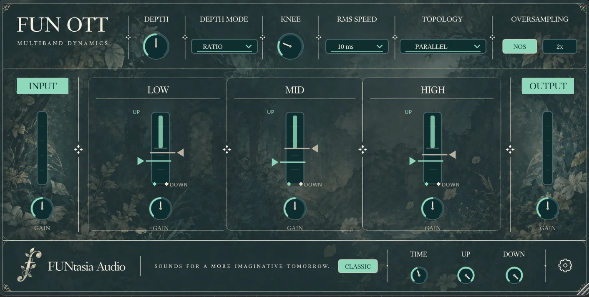

Multiband Dynamics
FUN OTT
A focused 3-band upward and downward compression plugin designed for fast, intuitive dynamics shaping.
Built for Alchemists who want more ways to shape the process, FUN OTT expands the familiar workflow with selectable Depth behavior, Knee, RMS Speed, processing Topology, Oversampling, and independent band shaping.
3-Band Upward & Downward CompressionDepth ModesAdjustable KneeRMS SpeedSerial / Parallel TopologyNOS / 2× OversamplingIndependent Band GainInput / Output GainGUI Scaling